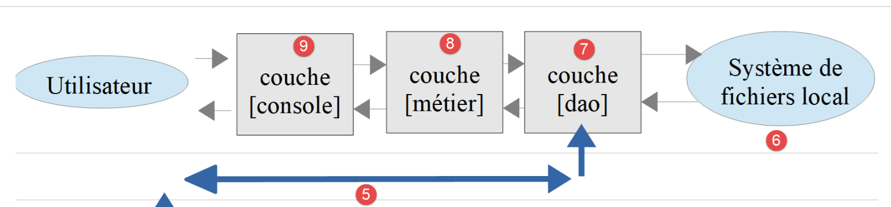

18. Practical Exercise – Version 8
We’ll revisit the sample application—version 5 (and its version 7 configured by the file JSON)—and turn it into a client/server application. This will allow us to put into practice what we learned in the previous chapter about web services.
18.1. Introduction
The architecture of version 5 was as follows:

- the layer named [dao] (Data Access Objects) handles interactions with the database MySQL and the local file system;
- the layer named [métier] performs the tax calculation;
- The main script acts as the orchestrator: it instantiates the layers [dao] and [métier], then communicates with the layer [métier] to perform the necessary tasks.
We are going to migrate this architecture to the following client/server architecture:

- In [2], we will reuse the [dao] layer from version 5, removing the methods that access the local file system. These methods will be migrated to the [dao] layer of the [6, 7] client;
- in [3], the [métier] layer will remain the same as in version 5, minus its [executeBatchImpots] method, which is migrated to the [métier] and [8] layers of the client;
- In [4], the server script must be written; it will need to:
- create the layers [métier], [dao], and [3, 2];
- communicate with the client script [5, 7];
- In [7], the client layer [dao] must be written:
- it will be a client HTTP of the server script [4, 5];
- It will adopt the methods for accessing the local file system from the [dao] layer of Version 5;
- In [8], the client’s [métier] layer will provide the same methods as the [InterfaceMetier] interface from Version 5. However, its implementation will be different. In version 5, the [métier] layer performed the tax calculation. Here, the server’s [métier] layer performs this calculation. The client-side layer [métier] will therefore call upon the layers [dao] and [7] to communicate with the server and request that it calculate the tax;
- In [9], the console script will need to instantiate the client layers [dao, métier] and launch their execution.
The server is a web script: it is located in the [scripts-web/impots/version-08] folder and executed by the Apache server in [Laragon]. The client is a console script: it is located in the [scripts-console/impots/version-08] folder and executed in a terminal.
18.2. The Server
We are focusing on the server-side of the application.

This architecture will be implemented by the following files:
18.2.1. Entities Exchanged Between Layers
The entities exchanged between the layers are those from version 5: the [ExceptionImpots] exception, the tax administration data [TaxAdminData], and the database description [Database]. The server also uses the Version 5 class [Utilitaires], whose method [lireFichierJson] is used by the class [Database]. Course PHP 7 used to copy these files to the server folder. We now load them directly from the [scripts-console/impots/version-05] folder: this ensures that each class exists as a single instance, and any correction made in version 5 benefits all versions that use it.
18.2.2. The [dao] layer
The [dao] layer implements the following [InterfaceServerDao] interface:
- Line 13: The [getTaxAdminData] method retrieves data from the tax authority’s database.
The [InterfaceServerDao] interface is implemented by the following [ServerDao] class:
This is the code for the [DaoImpotsWithTaxAdminDataInDatabase] class from version 5, presented in Chapter 13, without the [TraitDao] feature that provided the methods for reading and writing taxpayers’ JSON files. The private methods [getTranches] and [getConstantes] that follow—not reproduced here—remain unchanged. There is only one difference:
- line 17: the attribute [taxAdminData] is declared as [protected] instead of [private]. Version 9 will derive the [ServerDao] class, and the derived class must be able to initialize this attribute. Starting with PHP 8.4, a derived class can initialize an inherited [readonly] attribute, provided that it is not private.
18.2.3. The [métier] layer
The [métier] layer implements the following [InterfaceServerMetier] interface:
The [InterfaceServerMetier] interface is implemented by the following [ServerMetier] class:
- Line 9: The class [ServerMetier] is the class [Metier] from version 5 without its method [executeBatchImpots];
- line 15: The constructor receives a reference to a [dao] layer of type [InterfaceServerDao];
- line 26: the [calculerImpot] method and the private methods it uses remain unchanged. The algorithm was discussed and explained starting in Version 1, and its object-oriented version is covered in Chapter 13.
18.2.4. The server script
The server script [impots-server.php] implements the [web] and [4] layers. It is configured by the following JSON and [Data/config-server.json] files:
- Line 2: the JSON configuration file for the MySQL database. This is the [database-mysql.json] file from version 7. The [Data] folder also contains the [database-pgsql.json] file for the PostgreSQL database: simply change this line so that the server works with PostgreSQL;
- Lines 3–12: the PHP files for the application, whose paths are relative to the [version-08] folder on the server. The first four are from version 5;
- lines 13–18: the list of users authorized to use the application.
As in version 7, the [rootDirectory] key no longer exists: the script calculates its own root folder based on the constant [__DIR__]. There is also no longer a [absoluteDependencies] key, which provided the absolute path to the [vendor/autoload.php] file from [Composer]: it is now determined based on [__DIR__].
The file [config-server.json] is located in the [Data] folder on the server, and thus within the website’s directory structure: without taking precautions, anyone could download it along with URL and [http://localhost/php8-oct-2026/scripts-web/impots/version-08/Data/config-server.json] and read the user credentials. The same applies to the file [database-mysql.json], which contains the database password. The [Data] folder therefore contains a file named [.htaccess]:
A file named [.htaccess] contains Apache server configuration directives that apply to the folder containing it and its subfolders. The [Require all denied] directive denies access to the folder: Apache responds with [403 Forbidden] to any request for a file in the [Data] folder. The PHP script, on the other hand, reads these files from the disk without going through Apache and is not affected.
The script [impots-server.php] implements the [web] layer as follows:
1 2 3 4 5 6 7 8 9 10 11 12 13 14 15 16 17 18 19 20 21 22 23 24 25 26 27 28 29 30 31 32 33 34 35 36 37 38 39 40 41 42 43 44 45 46 47 48 49 50 51 52 53 54 55 56 57 58 59 60 61 62 63 64 65 66 67 68 69 70 71 72 73 74 75 76 77 78 79 80 81 82 83 84 85 86 87 88 89 90 91 92 93 94 95 96 97 98 99 100 101 102 103 104 105 106 107 108 109 110 111 112 113 114 115 116 117 118 119 120 | |
Comments
- lines 10–12: the classes from the [HttpFoundation] library that will be used are declared;
- Line 15: The server’s root directory is the script’s directory;
- line 20: the configuration file is loaded;
- Lines 23–26: We load the class loader from [Composer], then all the application files;
- line 29: we prepare a JSON response. The [JsonResponse] class is a subclass of [Response]: its [setData] method encodes the array passed to it into JSON and uses it as the response body. It also sets the header HTTP [Content-Type: application/json];
- Line 31: The options for function [json_encode], which is used by [setData]. With [JSON_UNESCAPED_UNICODE], accented characters are not encoded in [\uXXXX]. With [JSON_PRESERVE_ZERO_FRACTION], the actual tax rate [0.0] is written as [0.0] and not [0]: the client will decode it as a floating-point number (float) and not as an integer;
- lines 36–37: We retrieve the identifiers sent by the client, as in the previous chapter;
- lines 39–43: We verify that the user is indeed one of the authorized users. The function [array_any] (PHP 8.4) returns [true] if at least one element of the array [$config["users"]] satisfies the condition expressed by the arrow function passed to it. It replaces the [while] loop in the PHP script. 7. Passwords are compared using [hash_equals];
- lines 44–52: if this is not the case, the code HTTP [401 Unauthorized] is sent, indicating that access has been denied. Upon receiving this code and the header HTTP [WWW-Authenticate: Basic realm=…], browsers display an authentication window prompting the user to authenticate;
- Line 49: The server’s response, JSON, explains the cause of the error. All server responses will be the string JSON from an array [["réponse" => qqChose]]. The script PHP 7 returned the rejected username and password to the client. A password must never be returned or written to logs: we only return the username;
- Lines 56–88: We verify the validity of the request:
- a GET request with exactly three parameters;
- a parameter [marié] whose value must be [oui] or [non];
- a parameter [enfants], whose value must be an integer >= 0;
- a parameter [salaire], whose value must be an integer greater than or equal to 0;
- no other parameters;
- line 59: each time an error is detected, an error message is added to the array [$erreurs];
- line 65: the method [getString] of the object [$request->query] returns the parameter value as a character string;
- line 72: The parameters [enfants] and [salaire] follow the same rule: they are checked in the same loop. Their values, converted to integers, are placed in the array [$valeurs];
- line 85: The function [array_diff] returns the names of the received parameters that are not in the list [marié, enfants, salaire];
- line 89: if an error occurs, the code HTTP [400 Bad Request] is sent to the client. The response JSON contains the list of errors;
- Lines 99–104: From this point on, the query has been validated. The [dao, métier] layers can be instantiated. This instantiation incurs a cost (reading the database) and should only be performed if you are certain the query is valid. Constructing the [dao] layer may throw a [ExceptionImpots]-type exception;
- lines 106–108: The error message is often that of the PDO driver for SGBD. On Windows, it may sometimes be encoded in Windows-1252 rather than UTF-8. However, the [json_encode] function only accepts UTF-8 strings: [JsonResponse] would then throw an exception. The [mb_check_encoding] function checks the string’s encoding, and the [mb_convert_encoding] function converts it if necessary. The script PHP 7 used the function [utf8_encode], which has been deprecated since PHP 8.2;
- line 111: if an exception occurred, then the code HTTP [500 Internal Server Error] is sent to the client. This code indicates that the server was unable to process a valid request. The response explains the cause of the error;
- line 117: the tax calculation is delegated to the [métier] layer;
- Lines 119–120: Send the response, with the default status code [200 OK].
Let’s test this script. In a browser, request URL and [http://localhost/php8-oct-2026/scripts-web/impots/version-08/impots-server.php?marié=oui&enfants=2&salaire=55555]. The browser displays its authentication window, where you enter [admin] and [admin]. It then displays the server’s response: JSON. If the server rejects these credentials, see the section “When the server always responds with 401” in the previous chapter.
18.2.4.1. Why [http] and not [https]?
The client sends its credentials: strictly speaking, the URL should be secured ([https]), as we saw in the previous chapter. But modern browsers ([Chrome], [Edge], [Firefox]) will only accept a HTTPS page if the server certificate is issued by a certificate authority they trust. The certificate that [Laragon] generates for [localhost] is self-signed: it is not guaranteed by anyone. Depending on the browser version and the state of its cache, the browser either displays a warning with a link ([Continuer vers localhost (dangereux)]) or refuses to load the page without offering the option to proceed. This happens when the browser has recorded that [localhost] must always be served with a valid certificate (HSTS mechanism), or when it deems the certificate non-compliant. The solutions described in the previous chapter (adding the [Laragon] certificate to the [Windows] certificate store, deleting the HSTS rule) are not always sufficient.
We therefore use the unsecured URL certificate in the browser instead of [http://localhost/...]. This is not a security lapse here: a request to [localhost] never leaves the machine (it passes through the internal network interface, known as the “loopback” interface), and no spyware can intercept it on the network. Web browsers are aware of this, by the way: they treat [http://localhost] as a trusted origin. On the other hand, as soon as the server is accessible from the network—and especially in a production environment—the HTTPS protocol is essential, along with a valid certificate issued by a recognized authority (for example, free of charge, by [Let's Encrypt]).
The clients we write, however, are not browsers: the [curl] command (option [-k]) and the Symfony client [HttpClient] (options [verify_peer] through [false]) can accept the self-signed certificate from [Laragon]. However, this requires that the HTTPS protocol have been enabled in [Laragon] ([Apache / SSL / Enabled] menu), which is not the case by default, and that this certificate be usable on the machine. To ensure the examples work on any [Laragon] installation, we will therefore use URL and [http://localhost/...] throughout this chapter and the following ones: in the browser, in the [curl] commands, and in the client configuration files ([urlServer] key). To switch to HTTPS, simply replace [http] with [https] in these URL and add the [-k] option to the [curl] commands: The client configuration files already contain the necessary options [verify_peer] and [verify_host], which have no effect when used with [http]. The results are the same with both schemes.
Let’s run the same query with [curl]. The non-ASCII characters in a URL must be encoded: the character [é] in the parameter [marié] is encoded as [%C3%A9] (its two bytes as UTF-8). A browser performs this encoding itself:
- line 2: the code [200 OK];
- line 8: the header HTTP [Content-Type: application/json] defined by the class [JsonResponse];
- Line 10: The server's response JSON.
Without credentials (no [-u] option), the code [401 Unauthorized] is returned:
Let’s run a few error tests. We request URL and [http://localhost/php8-oct-2026/scripts-web/impots/version-08/impots-server.php?marié=x&enfants=x&salaire=x&w=x]:
A POST request without parameters (option [-X POST] from [curl]):
Now let’s simulate a failure of SGBD. We can stop MySQL from the [Laragon] window. Instead, we changed the DSN entry in the [database-mysql.json] file to [mysql:host=127.0.0.1;port=3307;dbname=dbimpots-2019;charset=utf8mb4]: no SGBD is listening on port 3307, and the connection is refused, just as it would be if MySQL were stopped:
- line 2: the code [500 Internal Server Error];
- line 10: the exception message [ExceptionImpots] thrown by the [dao] layer. On Windows, the driver message is in French: [Aucune connexion n'a pu être établie car l'ordinateur cible l'a expressément refusée].
Then restore the original DSN.
18.2.5. [PHPUnit] Tests
Each time we build a new version of the server, we will test the layers [dao] and [métier], as has been done since version 4. These tests do not go through the web server: they build the [dao] and [métier] layers just as the server script does and test them directly. They are located in the [Tests] folder on the server. Course PHP 7 used the [Codeception] testing framework; we are using [PHPUnit], as in the previous chapters.
18.2.5.1. [dao] Layer Tests
The [Tests/ServerDaoTest.php] test is as follows:
Comments
- Lines 23–31: We set up the same working environment as in the server script [impots-server.php]: reading the configuration file and loading the application files. The class loader for [Composer] does not need to be loaded: [PHPUnit] has already done so;
- Line 37: We create an instance of the [dao] layer to be tested, just as is done in the server script;
- From this point on, the conditions are the same as in the server script: the remainder of the [testTaxAdminData] method, not reproduced here, is the same as the [DaoTest] test for versions 5 through 7.
18.2.5.2. Tests for layer [métier]
The [Tests/ServerMetierTest.php] test is as follows:
Comments
- lines 28–36: We set up the same working environment as in the server script;
- Lines 40–44: Before each test, an instance of the [métier] layer to be tested is created, as done in the server script;
- The remainder of the test, not reproduced here, is the same as the [MetierTest] test for versions 4 through 7: a [contribuables] data provider containing the 11 taxpayers from the official figures table and the [testCalculerImpot] method.
The test results are as follows (the SGBD and MySQL tests must be run):
18.3. The client
We are focusing on the client-side of the application.

This architecture will be implemented by the following files:
18.3.1. Entities Exchanged Between Layers
The client entities have all been described and are already used in version 5:
- the exception [ExceptionImpots];
- the data for taxpayer [TaxPayerData].
Like the server, the client loads them from the Version 5 folder, along with the class [Utilitaires] and the trait [TraitDao].
18.3.2. The [dao] layer
The [dao] layer implements the following [InterfaceClientDao] interface:
- Line 15: The [getTaxPayersData] method loads taxpayer data from the JSON and [$taxPayersFilename] files into memory. If there are any errors, they are logged in the JSON and [$errorsFilename] files;
- line 19: the [calculerImpot] method calculates a taxpayer’s tax;
- line 23: the method [saveResults] saves the data from table [$taxPayersData]—which represents the results of several tax calculations—to file [$resultsFilename].
The methods [getTaxPayersData] and [saveResults] are part of the [InterfaceDao] interface in version 5. The [InterfaceClientDao] interface is implemented by the following [ClientDao] class:
Comments
- line 17: We insert the [TraitDao] class from version 5, which implements the [getTaxPayersData] and [saveResults] methods. This leaves only the [calculerImpot] method to be implemented;
- line 20: the client HTTP of [Symfony], of the type of the interface [HttpClientInterface];
- lines 26–30: The constructor of the [ClientDao] class takes three parameters:
- the URL [$urlServer] from the tax calculation server. This is a parameter promoted to an attribute (constructor property promotion);
- the array [$user] of keys [login] and [passwd], which defines the user making the requests. The attribute [#[\SensitiveParameter]] (PHP 8.2) instructs PHP to hide the value of this parameter in the stack traces displayed in the event of an error: the password will not appear there;
- additional options for the HTTP client;
- lines 32–35: the client HTTP is created once and for all, with the received options, which are supplemented by the option [auth_basic]: the user’s credentials will be sent with each request. The operator [...] copies the elements from the array [$httpClientOptions] into the options array. The client PHP 7 created a new client HTTP for each request;
- line 40: The [calculerImpot] method receives the three parameters to be sent to the tax calculation server;
- lines 44–50: The server is queried with the three parameters it expects. The [query] option adds these parameters to URL after encoding them ([marié] becomes [mari%C3%A9]);
- Line 54: The response JSON is retrieved from the server. If the parameter [false] is not passed to the method [getContent], then, if the server’s response status indicates an error (3xx–5xx codes), the HTTP client throws an exception as soon as an attempt is made to retrieve the response content. Here, regardless of the HTTP status of the response, we want to access its content, which explains the error;
- Lines 55–57: If the server could not be reached, the HTTP client throws a [ExceptionInterface] exception. We convert it to a [ExceptionImpots] exception: this way, the client’s upper layers only have to handle one exception type;
- line 60: In development mode, the server’s JSON response can be displayed;
- Lines 63–68: The server's response is the string JSON from an array [["réponse" => qqChose]]. We retrieve the [qqChose]. If the received document is not JSON (for example, an Apache error page HTML), we throw a [ExceptionImpots] exception;
- lines 71–77: if the status code HTTP is not 200, then the server has encountered a problem. An exception of type [ExceptionImpots] is then thrown, with a message consisting of the server’s response JSON appended with the response code HTTP. The operator [+] combines two associative arrays;
- line 80: the result is returned as an associative array with keys [impôt, surcôte, décôte, réduction, taux].
18.3.3. The [métier] layer
The [métier] [8] layer implements the following [InterfaceClientMetier] interface:
- Line 13: The [calculerImpot] method calculates the tax;
- line 17: the [executeBatchImpots] method calculates the tax for taxpayers whose data is in the [$taxPayersFileName] file, writes the results to the [$resultsFileName] file, and writes any errors encountered to the [$errorsFileName] file.
These are the two methods of the [InterfaceMetier] interface in version 5. The [InterfaceClientMetier] interface is implemented by the following [ClientMetier] class:
Comments
- line 12: The constructor of the [ClientMetier] class receives a reference to the [dao] layer as a parameter;
- Lines 18–20: The tax calculation is delegated to the [dao] layer;
- lines 25–38: The method [executeBatchImpots] is that of the [Metier] class in version 5.
18.3.4. The main script
The client script [Main/MainImpotsClient.php] implements the layers [console] and [9]. It is configured by the following file: JSON and [Data/config-client.json]:
- Line 2: the URL from the tax calculation server. It uses the [http] schema: we saw why earlier;
- Lines 3–6: the user sending requests to the tax calculation server;
- lines 7–9: the HTTP client options. They are only used with a URL or [https]: as in the previous chapter, they instruct the client not to verify the server’s self-signed certificate. When used with a URL or [http], these options are ignored;
- lines 11–13: the JSON files containing taxpayer data, results, and errors;
- lines 14–23: the various PHP files from the client. The first four are those for version 5.
The code for the [MainImpotsClient.php] script is as follows:
Comments
- line 10: the client’s root folder is the parent folder of the [Main] folder;
- line 12: the configuration file, located in the [Data] folder. Its name can be passed as an argument to the script ([php MainImpotsClient.php config-client-ko.json]). Otherwise, the default is the [config-client.json] file. We will use this option for error testing;
- Lines 18–21: Loading dependencies: the [Composer] class loader for the Symfony [HttpClient] library, followed by the client files;
- line 29: creating the [dao] layer. We pass the information the layer constructor expects to it:
- the URL from the tax calculation server;
- the credentials of the user who will make the requests;
- the options for the HTTP client;
- Line 31: Creation of the [métier] layer. A reference to the [dao] layer that was just created is passed to the layer constructor;
- line 35: the [métier] layer is instructed to:
- calculate the taxes for all taxpayers in the [taxpayersdata.json] file;
- write the results to the file [results.json];
- write the errors to the file [errors.json];
- Lines 37–39: All client errors, including communication errors with the server, occur as a [ExceptionImpots] exception, for which the code and message are displayed.
With the Apache server and SGBD MySQL running, let’s run the client in a terminal opened in the [Main] folder:
Running the client produces the same results as in previous versions. Check the following files:
- [Data/taxpayersdata.json]: data for taxpayers for whom the tax amount is calculated;
- [Data/results.json]: results for the various taxpayers in the [Data/taxpayersdata.json] file. This file is identical to the [results.json] file from version 7;
- [Data/errors.json]: errors that may have occurred while processing the [Data/taxpayersdata.json] file.
Let’s look at the possible error scenarios. First, an unreachable server. You can stop the Apache server for [Laragon]. Instead, we used the configuration file [config-client-injoignable.json], which is identical to the file [config-client.json] except for URL: this one specifies port 4443 on the [localhost] machine, on which no server is listening for requests ([http://localhost:4443/php8-oct-2026/...]). The results in the client console are then as follows:
The exception thrown by the Symfony client HTTP was converted by the [dao] layer into a [ExceptionImpots] exception with code 40.
Now, let’s simulate a failure of SGBD MySQL, in the same way as we did previously with [curl]. The results in the client console are as follows:
Let’s restore the SGBD, then use the configuration file [config-client-ko.json], in which the logging-in user is unknown to the server:
The results in the client console are then as follows:
18.3.5. [PHPUnit] Tests
As we did for previous versions, we will write a test named [PHPUnit] for the client’s [métier] layer. The [Tests/ClientMetierTest.php] test is as follows:
Comments
- lines 29–37: definition of the test environment. We use the same one as in the main script [MainImpotsClient.php];
- Lines 41–45: Creation of the layers [dao] and [métier] before each test. The attribute [$this->métier] references the layer [métier];
- The rest of the test, not reproduced here, is the same as in previous versions: the 11 taxpayers from the table of official figures and the [testCalculerImpot] method. Note that the [assertSame] validation requires that the values returned by the server have exactly the expected types: integers for tax, surcharge, discount, and reduction; a real number for the rate. This is ensured by the server’s [JSON_PRESERVE_ZERO_FRACTION] option.
This test checks the client, but also, through it, the server: the Apache server and the SGBD MySQL must be running. The test results are as follows:
We now have a client/server application. In the next version, we will improve the server: it will use a session, log its operations, and notify the administrator via email in case of a problem.